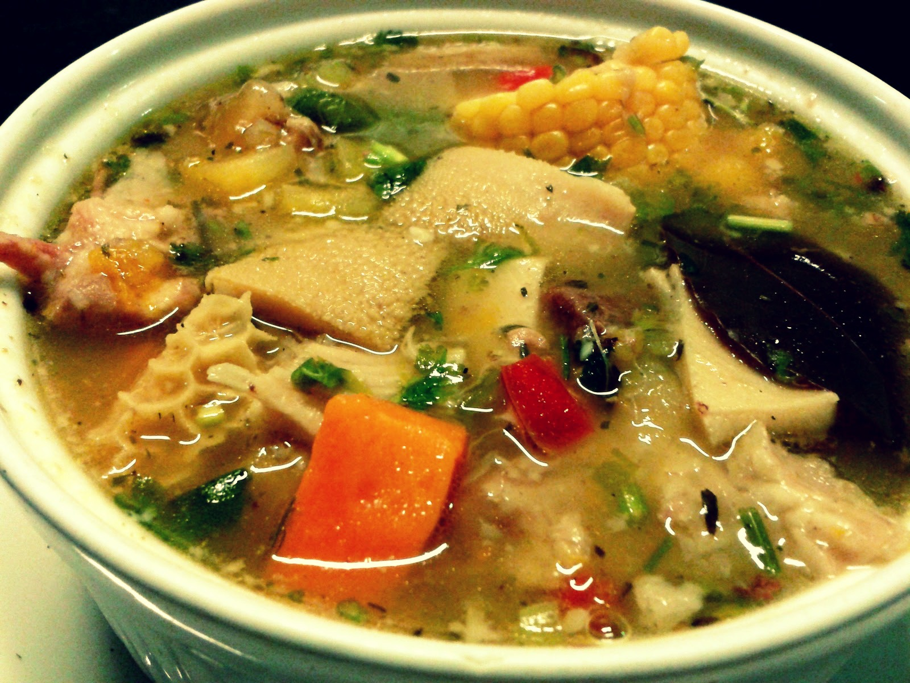
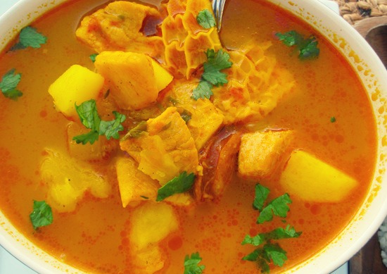

Sopa de Mondongo
Sabroso y tradicional. Así describo este delicioso plato heredado de la gastronomía española. Este plato se prepara con la panza de la vaca tanto en España como en los países latinoamericanos.
Ingredientes
- 2 kilogramos de mondongo.
- 1 libra de pierna de cerdo.
- 3 chorizos picados en trocitos.
- 1 taza de hogao.
- 12 tazas de agua.
- 4 cubos de caldo de gallina.
- 1 diente de ajo machacado.
- 1 cebolla cabezona picada.
- 3 papas partidas en cuadritos.
- ½ libra de arvejas cocidas.
- 2 zanahorias picadas en cuadritos.
- 1 yuca en cuadritos.
- 1 cucharada de cilantro.
- Cominos, sal, pimienta y azafrán al gusto.
Preparación
Cuando vamos a manejar distintos tipos de carnes, es clave lavarlas muy bien y dejarlas entre agua y unas gotas de limón por unos cinco minutos. Lavamos minuciosamente nuestras manos y ya estamos listos para empezar a cocinar.
Entonces, en una olla a presión ponemos a cocinar el mondogo y las arvejas por aproximadamente una hora, todo depende de qué tan blando esté el mondongo pues si queda duro la sopa perderá una consistencia clave.
Ahora empezamos a hacer el hogao. Picamos la cebolla, el tomate y los dientes de ajo, los ponemos a sofreír con unas gotas de aceite de oliva y esperamos hasta que estos ingredientes adquieran un color dorado, cuando esto pase ya tenemos un hogao en el punto perfecto.
En un tercer recipiente, unimos el mondongo, la pierna de cerdo y los chorizos picados, los aliñamos entre el hogao y los dejamos reposar en esta mezcla durante dos horas. El hogao siempre le dará un sabor especial a nuestras comidas, por eso es clave que las carnes pasen un tiempo en esta mezcla.
Mientras pasan las dos horas, ponemos a hervir las 12 tazas de agua, le adicionamos los cubos de caldo de gallina, un diente de ajo, la cebolla cabezona, la zanahoria y el azafrán, y dejamos que estos ingredientes se cocinen durante unos 20 minutos.
Luego, incorporamos el mondongo, el cerdo, los chorizos, la papa y la yuca a esta mezcla, dejamos a fuego medio por unos 30 o 40 minutos y esperamos hasta que el caldo consiga la textura de una sopa, osea que esté espesa y las verduras blandas. ¡Listo! Tu sopa acaba de estar y ahora puedes ponerle cebolla y cilantro picado y servirla con un poco de arroz.
Tips
Para lograr que la sopa quede espesa, cuando pongas a concinar el mondongo puedes adicionarle unos cuantos cuadritos de papa blanca, cuando esta se derrite le da el espesor suficiente a la sopa.